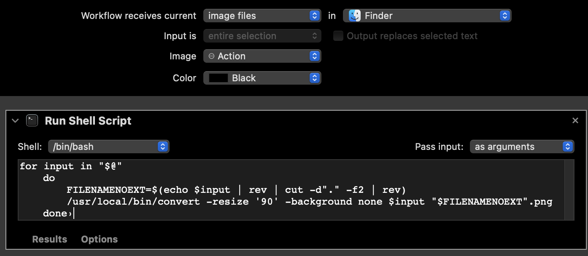

right click to terminal: using MacOS quick actions with shell scripts
Handily, MacOS allows you to use Automator to create "quick actions" that execute shell scripts.
With some clever programming, you can select a group of files and right click on them to perform repetitive actions.
Below is an example of a quick action I created to process images, and some specific tips throughout on using quick actions with shell scripts. This specific code relies on imagemagick (brew install imagemagick
), which has a command called convert
for converting image files.

First, note that the workflow receives image files in Finder (for our purposes, this basically means selecting them in Finder and right-clicking). Presumably MacOS ascertains/sanitizes input in some way to determine what types of files you are selecting. I don't know how it does this and it is out of the scope of this guide. Just note that MacOS does this for you and proceed accordingly.
The "Shell:" dropdown menu on the left is set to "/bin/bash". This is what we need for a bash script, but you can select the dropdown and change it to "/bin/python", etc. depending on the code.
The "Pass input:" dropdown menu should be set to "as arguments". In this case, it means that the input will be passed as a series of filenames.
On to the code:
"for input in "$@"
do
FILENAMENOEXT=$(echo $input | rev | cut -d"." -f2 | rev)
/usr/local/bin/convert -resize '90' -background none "$input" "$FILENAMENOEXT"-90w.png
done
The special variable "$@" represents all the command-line arguments (in this case, the list of filenames) provided to the script as an array. Effectively, the output will be separate lines. This is useful as we want to send each filename through our for loop in turn. (As an aside, if you replaced this with, e.g., "$*", which is a string containing all arguments, the arguments would all list on the same line, separated by a space.)
This particular program is just an example of what's possible. On the first line, it reverses the filepath and name, clips off the extension, reverses it again, and saves it as a variable. (This might not be the greatest way to handle what we're doing, but it works for conventional files.)
The next line refers to the command "convert". Note the full path, /usr/local/bin/convert. Dropping the full path may make the script more portable between systems.
The remainder of the line is composed of convert's parameters to convert the image size to 90 pixels wide, ending with the original filename, "input", and the variable without an extension, plus a suffix and new extension, .png, as required by the "convert" command to change the filetype. Note that each are enclosed with double quotes. If you don't enclose these filepaths with double quotes, and your filepath contains spaces (as allowed in MacOS), bash won't process it correctly and Finder will throw an error.
Hopefully this has been useful, and you can use this as a basis for creating other quick actions in MacOS using Automator.